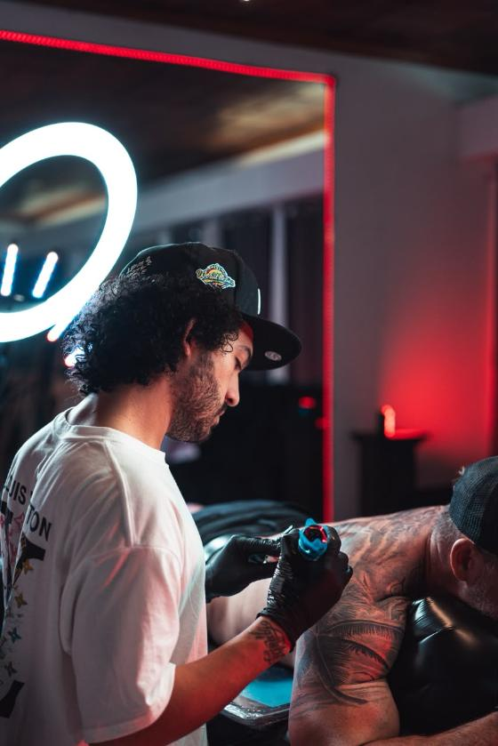
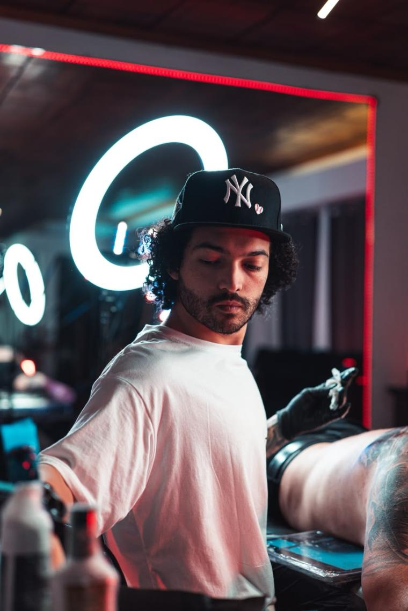
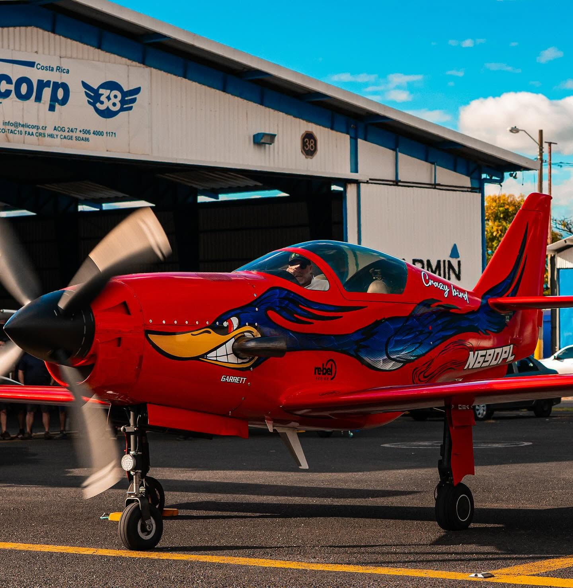

01
Realismo
Retratos y figuras con volumen real: luz, sombra y textura trabajadas para que la pieza se lea de lejos y aguante el detalle de cerca. Es donde más me meto.
Desde [₡000.000] Consultar ↗San Pedro, San José · Costa Rica
Soy Jeustin Palma. Tatúo realismo y black & grey en Costa Rica: luz, sombra y textura que se leen de lejos y de cerca.

Realismo que aguanta de lejos y de cerca.
Soy Jeustin Palma Chacón y tatúo realismo y black & grey en Costa Rica. Cada pieza arranca con una conversación: qué querés, dónde va y cuánto aguanta tu piel.
Después dibujo, ajustamos juntos y hasta entonces agarro la máquina. Nada entra en piel sin que los dos estemos seguros del diseño.
[Contame acá cómo empezaste, con quién te formaste y qué te gusta tatuar. Dos o tres líneas bastan.]

Retratos y figuras con volumen real: luz, sombra y textura trabajadas para que la pieza se lea de lejos y aguante el detalle de cerca. Es donde más me meto.
Desde [₡000.000] Consultar ↗Solo negro y sus grises. Contraste limpio, degradados largos y formas que envejecen bien. Si querés algo que aguante décadas, es por acá.
Desde [₡000.000] Consultar ↗Piel, mirada y tela con color real. Necesito una foto con buena luz y de frente; con eso se saca el parecido y se planea la paleta.
Desde [₡000.000] Consultar ↗Brazos, espaldas y torsos completos. Se planea por sesiones y se dibuja pensando en el cuerpo entero, siguiendo el músculo, no en un parche suelto.
Desde [₡000.000] por sesión Consultar ↗Máscaras, olas y filigrana. Negro sólido, formas grandes y un trazo que se lee a distancia. Otro registro, la misma mano.
Desde [₡000.000] Consultar ↗Tinta que aguanta el tiempo.
Jeustin Palma — Costa Rica
Arrastrá para ver más — tocá una foto para ampliarla.
De la referencia a la piel

Más piezas en @jeustinpalmart.
La aguja, el trazo y la sesión. Tocá para reproducir.
Artista nacional confirmado. Centro de Convenciones, Costa Rica. 28 de febrero al 2 de marzo.
Bogotá, Colombia. 10 y 11 de septiembre. La convención más grande a la que he asistido en todo mi camino como tatuador.
Realismo, black & grey, retrato a color, gran formato y cover-up. Cita previa por WhatsApp.
Tres cosas que hacen que la sesión salga bien.
Traé tu identificación. Sin excepciones.
Dormí bien y comé antes. Nada de alcohol el día previo.
La fecha se aparta con un adelanto. [Detallá acá tu política de depósito.]
Lunes a sábado, 9 a.m. a 6 p.m. Cita previa.